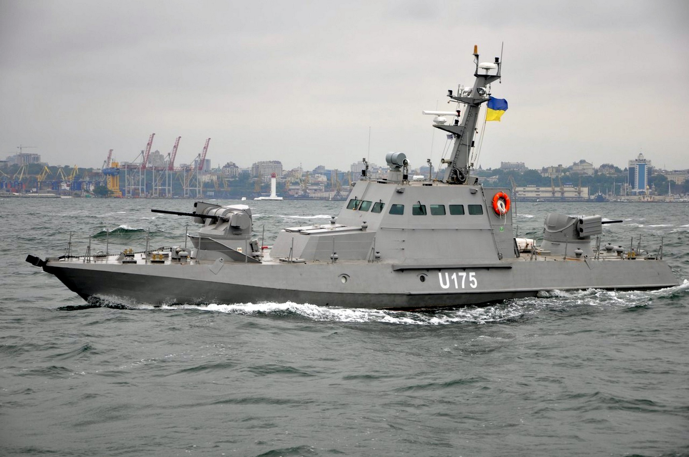

Вид та немного информации
- Фрегат
Гетман Сагайдачный
Фрегат, флагман ВМС Украины. Закладывался как сторожевой корабль проекта 11351 «Нерей». Назван в честь гетмана Петра Конашевича-Сагайдачного. В ходе нападения России на Украину в 2022 году в Николаеве был притоплен экипажем во избежание захвата российскими войсками.
Григорий Куропятников (BG50)
Пограничный сторожевой корабль проекта 1241.2 (шифр «Молния-2», англ. Pauk-I class corvette по классификации НАТО ), корабль морской охраны 2-го ранга Государственной пограничной службы Украины .
Патрульный катер (Прилуки)
Pакетный катер проекта 206-МР (шифр «Вихрь», англ. Matka class по классификации НАТО ) Черноморского флота ВМФ СССР, а с 1996 года — Военно-Морских cил Украины. Ракетный катер «Прилуки» был спущен на воду 30 ноября 1979 года на Средне-Невском судостроительном заводе и получил бортовой номер Р-262 (заводской № 247). До 30 декабря 1995 года находился в составе в состав 296-го дивизиона малых ракетных кораблей 41-й бригады ракетных катеров Черноморского флота СССР, базировавшихся в посёлке Черноморское. В августе 1985 года катер был выведен в резерв на консервацию.
Артиллерийские катера «Скадовск»
Сторожевые катера проекта 1400 (1400М) «Гриф», классификация НАТО: англ. Zhuk class — серия советских сторожевых и патрульных катеров стоящих на вооружении Пограничной службы ВМС Украины и военно-морских сил других стран.Проектирование сторожевых катеров для морских частей погранвойск КГБ СССР началось с середины 1960-х годов. В 1967 году в ЦМКБ «Алмаз» командой главного конструктора В. М. Бурлакова и главного наблюдающего от ВМФ капитана 2 ранга В. И. Литовского был создан проект 1400 под кодовым шифром «Гриф». Катера подобного проекта предназначались для охраны государственной морской границы в прибрежных районах, проливах и на открытых рейдах портов, на речных и озёрных участках, а также для обеспечения морских КПП. В 1967-2000 годах построено около 300 катеров этого типа: на ССЗ «Море» Феодосия (217 ед.), на Батумском ССЗ и 8 на Приморском ССЗ. Из них 118 проданы в 20 стран мира.
Речные бронекатера проекта 58150 «Гюрза»
Речные бронекатера проекта 58150 — тип речных артиллерийских катеров (АКА) украинской разработки. Проектный шифр — «Гюрза».
Бронекатера предназначены для несения боевой вахты на приграничных реках, озёрах, а также в прибрежной морской зоне. В перечень задач бронекатеров входит: патрулирование, охрана водных рубежей, борьба с малоразмерными судами противника, защита береговых стационарных и плавучих гидротехнических объектов и сооружений, содействие десантным и пограничным группам, обеспечение безопасности мореплавания, а также содействие в вопросах разведки, доставки и снабжения. При необходимости катер способен атаковать и такие объекты, как бункеры, здания, мосты, автотранспорт, легковооружённые боевые машины.
- Десантный корабль
Десантный корабль 'Юрий Олефиренко'
L401 «Юрий Олефиренко» (укр. «Юрій Олефіренко»), с 1994 по 2018 год — U-401, до 1994 года — «СДК-137», в 1994—2016 годах «Кировоград» (укр. «Кіровоград») — советский и украинский средний десантный корабль проекта 773. Текущее название носит в честь капитана 1-го ранга ВМС Украины Ю. Б. Олефиренко, погибшего в вооружённом конфликте на востоке Украины.
Относится к серии десантных кораблей проектов 770, 771 и 773, строившихся в Польше в 1960-е — 1970-е годы для ВМФ СССР. К достоинствам этих кораблей относятся конструктивная простота, малая стоимость и экономичность в эксплуатации, рациональное размещение десанта, небольшой состав экипажа и хорошее вооружение. Предназначен для десантирования 1-2 взводов десанта морской пехоты.